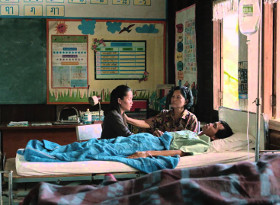

Rak ti Khon Kaen
Cemetery of SplendoUr
Apichatpong Weerasethakul – Thailand / UK / Frankreich / D / Malaysia 2015
122 min – HD – thai. OV Engl. ST – German Premiere
D+Sc+P: Apichatpong Weerasethakul – DoP: Diego Garcia – S: Akritchalerm Kalayanamitr – S: Lee Chatametikool – P: Kick the Machine, Illuminations Films – With Jenijira Pongpas Widner, Banlop Lomnoi, Jarinpattra Rueangram, Petcharat Chaiburi
Soldiers with a mysterious sleeping sickness are transferred to a temporary clinic in a former school. The memory-filled space becomes a revelatory world for housewife and volunteer Jenjira, as she watches over Itt, a handsome soldier with no family visitors. She befriends young medium Keng who uses her psychic powers to help loved ones communicate with the comatose men. Magic, healing, romance and dreams are all part of Jen’s tender path to a deeper awareness of herself and the world around her.
"Amid the enigmatic recollections and truthful beauty, CEMETERY OF SPLENDOUR is the first Thai film that responds to the uncertainty – political, personal, historical – of military-ruled Thailand. It’s all the more astonishing because this dark prophecy is done in the gentlest and most civilized, yet clear-eyed and unflinching way." –Kong Rithdee
"Unique imagist cine-poems: an essay in psychogeography and a meditation on death, the presence of the spirit world in nature and the unquiet ghosts of guilt and pain in the Thai nation." – Peter Bradshaw
saturday 10 oct 6.30 pm filmmuseum münchen
Apichatpong Weerasethakul born in 1970, he holds a degree in Architecture from Khon Kaen University and a Master of Fine Arts in filmmaking from the School of the Art Institute of Chicago. Apichatpong Weerasethakul has come to be recognized as one of the most original voices in cinema today.
Films (selection) Mysterious Object at Noon 2000 – Blissfully Yours 2002 – Tropical Malady 2004 – Syndromes and a Century 2006 – Emerald - Morakot 2008 (3. UX) – Uncle Boonmee Who Can Recall His Past Lives 2010
Exhibitions (selection) dOCUMENTA (13) 2012 – Haus der Kunst, München 2009 – SCAI The Bathhouse, Tokio 2008 – Guangdong Museum of Art, China 2008 – KunstFilmBiennale, Köln 2006 – International Film Festival Rotterdam 2006 – Liverpool Biennale 2006 – Haus der Kulturen der Welt 2005 – Kunstverein München 2005 – Taipei Fine Arts Museum - Taipei Biennale 2005 – RAM Foundation, Rotterdam 2004